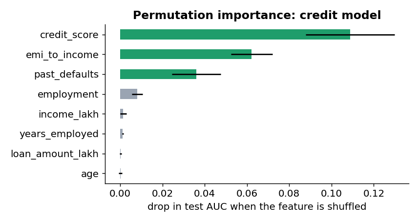
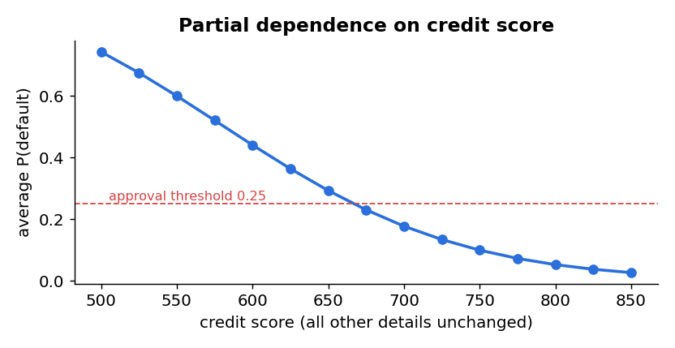
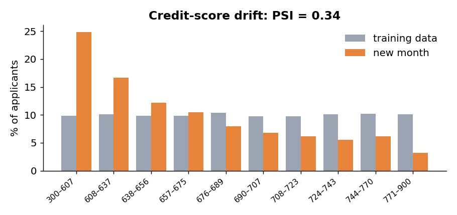
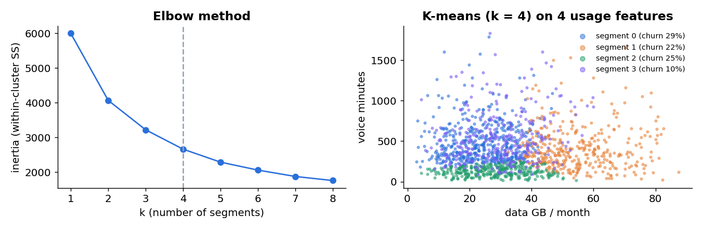
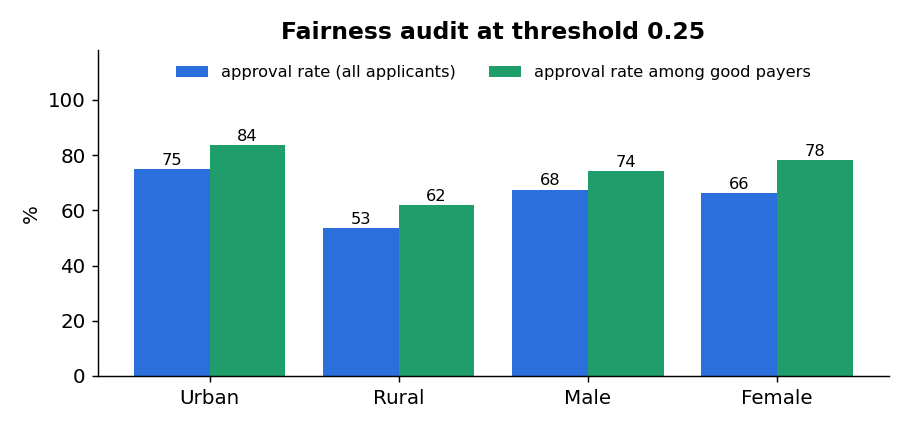

Model interpretation
Interpretation answers two different questions. Global: what does the model rely on overall? Local: why did it make this decision for this person? Banks, doctors, regulators and customers all ask both.
| Method | Global / local | Works for | Idea |
|---|---|---|---|
| Coefficients, odds ratios | global | linear and logistic models | effect of +1 unit, others fixed |
| Tree rules, impurity importance | global (and local path) | trees, forests | which splits reduce impurity most |
| Permutation importance | global | any model | shuffle one column, measure the score drop |
| Partial dependence (PDP) | global | any model | average prediction as one feature changes |
| Contributions / reason codes | local | linear models (exact) | coefficient × (value − average) |
| SHAP, LIME | local (and global) | any model | fair share of the prediction for each feature |
| Counterfactual | local | any model | smallest change that flips the decision |
Global: what drives default in the credit model?
default rate 0.235 test AUC 0.75 Standardised coefficients (effect of +1 standard deviation on the log-odds): credit_score -0.929 emi_to_income 0.596 past_defaults 0.451 self_employed 0.380 income_lakh -0.075 age -0.037 loan_amount_lakh -0.018 years_employed -0.016
+50 credit points: e−0.01455 × 50 = 0.48 → the odds of default roughly halve.
EMIs take 10 percentage points more of income: e3.588 × 0.10 = 1.43 → odds rise 43%.
Each past default: e0.903 = 2.47 → odds more than double.


Permutation importance works for any model and avoids the bias of impurity importance we met in Unit 4: credit score (AUC drop 0.109), EMI share (0.062) and past defaults (0.036) matter; age, loan amount and years employed hardly at all. The PDP shows the shape of the effect: 550 → 0.60, 650 → 0.29, 700 → 0.18, 750 → 0.10, 800 → 0.05.
Local: why was this applicant declined?
For a logistic model the explanation is exact. Each feature contributes coefficient × (applicant’s value − average value) to the log-odds, measured against an average applicant.
Applicant LN71318: P(default) = 0.413 -> DECLINE Reasons (contribution to log-odds vs an average applicant; + pushes towards decline): emi_to_income 0.635 credit_score 0.380 self_employed 0.240 income_lakh 0.061
EMI share 0.567 vs average 0.390 → 3.588 × 0.177 = +0.64
Credit score 664 vs 690 → −0.01455 × (−26) = +0.38
Self-employed (1 vs 0.37) → +0.24 · no past defaults (0 vs 0.23) → −0.20
All contributions add to +1.18 → log-odds −0.35 → P = 1/(1 + e0.35) = 0.413 > 0.25 → declined.
India’s RBI Fair Practices Code asks lenders to tell applicants the main reasons a loan application was rejected, so reason codes are a requirement, not a nice extra. For non-linear models, SHAP values give each feature a fair share of the prediction in the same additive way.
Deployment basics
Deployment means putting a trained model where it can make predictions for real decisions: in a nightly job, behind an app, or inside a device.
Save the whole pipeline
pipe = Pipeline([
("prep", ColumnTransformer([("num", StandardScaler(), NUM),
("cat", OneHotEncoder(drop="first", handle_unknown="ignore"), ["employment"])])),
("model", LogisticRegression(max_iter=5000)),
]).fit(train[FEATS], train["defaulted"])
joblib.dump(pipe, "credit_model_lab.joblib")
loaded = joblib.load("credit_model_lab.joblib") # what a server or nightly job would do
The scaler’s means, the encoder’s categories and the model travel together in one file. In Unit 3, scoring one car with pd.get_dummies produced different columns from training. That is training–serving skew, and saving a fitted pipeline prevents it. handle_unknown="ignore" also stops a crash if a new category (say “Freelancer”) appears.
Batch scoring
new = pd.read_csv("new_applications.csv")
new["p_default"] = loaded.predict_proba(new[FEATS])[:, 1].round(3)
new["decision"] = np.where(new["p_default"] < THRESHOLD, "approve", "refer to officer")
Batch-scored 20 applications: {'approve': 14, 'refer to officer': 6}
application_id credit_score emi_to_income p_default decision
LN70208 626 0.263 0.207 approve
LN70757 673 0.642 0.335 refer to officer
LN70290 604 0.668 0.780 refer to officer
LN71693 697 0.120 0.056 approve
LN70867 661 0.149 0.142 approve
Notice LN70208: a credit score of 626 is low, but EMIs take only 26% of income, so the risk (0.207) is acceptable. The model weighs features together, which a single cut-off on credit score cannot do.
| Deployment mode | How | Speed needed | Example |
|---|---|---|---|
| Batch | score a file or table on a schedule | hours | nightly churn call list; monthly credit-limit review |
| Real-time (online) | an API answers one request at a time | milliseconds | loan decision inside an app |
| Streaming | score every event as it flows past | milliseconds, continuously | card and UPI fraud checks |
| Edge / embedded | the model runs on the device | instant, works offline | phone keyboard prediction, factory sensor |
| Practice | Why |
|---|---|
| Version models, data and code (v1, v2…; a model registry) | know exactly which model made each decision; roll back if needed |
| Package the environment (requirements.txt, a Docker container) | “works on my laptop” must also work on the server |
| Test before release (unit tests on the pipeline, a hold-out check) | catch broken features before customers do |
| Automate (CI/CD, MLOps pipelines) | repeatable retraining and release |
| Document (a “model card”: purpose, data, metrics, limits, owner) | accountability and safe reuse |
Real-time prediction
In real time, a request arrives, the system builds the features, scores them and replies, usually within milliseconds. Our lab includes a complete scoring API in about 50 lines of standard Python (score_api.py):
MODEL = joblib.load(HERE / "credit_model.joblib") # load ONCE at start-up, not on every request
def do_POST(self):
app = json.loads(self.rfile.read(int(self.headers.get("Content-Length", 0))))
missing = [f for f in FEATURES if f not in app]
if missing: # validate input before scoring
return self.reply(400, {"error": "missing fields", "fields": missing})
p = float(MODEL.predict_proba(pd.DataFrame([{f: app[f] for f in FEATURES}]))[0, 1])
self.reply(200, {"p_default": round(p, 4), "decision": "approve" if p < THRESHOLD else "refer to officer",
"threshold": THRESHOLD, "model_version": MODEL_VERSION, "latency_ms": ...})
Real requests to it on the teacher’s laptop:
{'p_default': 0.4132, 'decision': 'refer to officer', 'threshold': 0.25, 'model_version': 'credit-logit-v1', 'latency_ms': 4.26}
{'p_default': 0.0368, 'decision': 'approve', 'threshold': 0.25, 'model_version': 'credit-logit-v1', 'latency_ms': 2.95}
(400, {'error': 'missing fields', 'fields': ['years_employed', 'income_lakh', ...]})
latency ms median 2.57 max 6.35
| Concept | Meaning | In our API |
|---|---|---|
| Latency | time from request to answer | ≈ 2.6 ms median for the model step |
| Latency budget | the slice of total response time the model may use | network + feature lookup + model must fit the app’s limit |
| Throughput | requests per second | add more server copies behind a load balancer |
| Feature store | one place that computes features identically for training and serving | e.g. “EMI-to-income” computed the same way everywhere |
| Input validation | reject bad requests clearly | missing fields → 400 error, not a crash |
| Logging and versioning | record inputs, outputs and model version | needed for monitoring, audits and appeals |
| Fallback | what happens if the model is down | a simple rule, or route to a human |
Monitoring and model drift
The inputs change: a partner bank starts sending applicants with thinner credit files, so the average credit score falls from 690 to 651.
The relationship changes: after an interest-rate rise, the same applicant is riskier than before. Only visible once outcomes (defaults) arrive, often months later.
Population Stability Index (PSI)
PSI = Σ (A − E) × ln(A / E)Lowest bin: E = 0.099, A = 0.248 → (0.149) × ln(2.505) = 0.149 × 0.918 = 0.137
Adding all 10 bins gives PSI = 0.339.
Rule of thumb: < 0.10 stable · 0.10–0.25 watch · > 0.25 significant drift.

PSI credit_score = 0.339 -> SIGNIFICANT DRIFT: investigate / retrain
| What to monitor | How |
|---|---|
| Input data | PSI per feature, missing-value rates, new categories |
| Predictions | average score and approval rate over time |
| Performance | AUC, recall, default rate of approved loans, once outcomes arrive |
| Fairness | approval and error rates by group (Section 8) |
| Operations | latency, error rate, uptime |
Case study: finance (credit scoring)
| Lifecycle stage | The lender’s credit model |
|---|---|
| Problem | Approve applicants likely to repay; refer risky ones to a credit officer |
| Data | 2,000 applications: age, income, loan amount, EMI-to-income, credit score, past defaults, employment; 23.5% defaulted |
| Model | Logistic regression pipeline (explainable by design); test AUC 0.750 |
| Decision rule | approve if P(default) < 0.25 → 402 of 600 test applicants (67%) approved |
| Explanation | reason codes + counterfactuals for every referral |
| Deployment | real-time API in the loan app; batch re-scoring monthly |
| Monitoring | PSI on inputs (0.339 this month → investigate), default rate of approved loans, fairness by group |
Other finance applications: card and UPI fraud detection (streaming, very high precision needed so genuine payments aren’t blocked), collection prioritisation (who to remind first), credit-limit setting, insurance pricing, anti-money-laundering alerts.
Case study: healthcare (diabetes screening)
A clinic wants to decide which patients should get a confirmatory blood test for diabetes. 22.1% of its 1,500 patients turned out to be diabetic. A logistic model on age, BMI, fasting glucose, blood pressure, family history and activity reaches a test AUC of 0.731.
Diabetes screening: 22.1% diabetic, test AUC 0.731 threshold 0.5: recall 0.263 referred for a lab test 47 of 450 missed 73 threshold 0.2: recall 0.667 referred for a lab test 177 of 450 missed 33 threshold 0.1: recall 0.859 referred for a lab test 289 of 450 missed 14
- Decision support, not diagnosis: a doctor and a lab test decide.
- Check every subgroup (age, gender, region): a model trained mostly on one group can miss others.
- Health data is sensitive personal data: strict consent and security.
Other healthcare applications: hospital readmission risk, sepsis early warning, no-show prediction for appointments, medical-image screening (deep learning), drug-stock forecasting.
Case study: marketing (customer segmentation with K-means)
Marketing often starts without a target: “what kinds of customers do we have?” That is unsupervised learning, and K-means clustering (Lab Experiment 9) is its workhorse.
2. Assign every customer to the nearest centroid (Euclidean distance).
3. Update every centroid to the mean of its customers. E.g. customers at (1, 1), (1.5, 2) and (3, 4) give the centroid (1.83, 2.33).
4. Repeat 2–3 until no customer changes cluster.
It minimises inertia = Σ (distance from each customer to its centroid)².
Choosing k. Inertia always falls as k grows (k = n would give 0), so look for the “elbow”: 6000, 4067, 3218, 2660 (k = 4), 2285, 2055. The silhouette score (how much closer each point is to its own cluster than to the next) prefers k = 2 (0.308; k = 4 gives 0.261), but two segments are too coarse to act on. Choosing k combines statistics and business judgement.
Scale first. Monthly charge is in hundreds of rupees, data in tens of GB; without scaling, K-means would only see price.
customers data_gb voice charge tenure prepaid churn segment 0 507 24.60 424.0 348.25 13.59 0.82 0.29 1 380 54.82 351.5 753.11 18.57 0.19 0.22 2 323 28.12 127.0 391.48 14.86 0.72 0.25 3 290 30.12 491.0 422.86 46.06 0.72 0.10

| Segment (our name) | Profile | Churn | Campaign |
|---|---|---|---|
| 0 · New prepaid talkers | 507 customers, low data, cheap plans, 82% prepaid, 14 months | 29% | first-year onboarding offer; push autopay |
| 1 · Premium data lovers | 380, 55 GB, ₹753 plans, mostly postpaid | 22% | data add-ons, priority support |
| 2 · Light users | 323, very little voice (127 min) | 25% | offer a cheaper plan before they leave |
| 3 · Loyal veterans | 290, 46 months’ tenure | 10% | loyalty rewards, referral bonus |
Combine segmentation with the churn model: within each segment, call the customers with the highest churn probability, using the campaign designed for that segment. Other marketing uses: response models (who will buy if contacted), uplift modelling (who will buy because they were contacted), recommendations, lifetime value prediction.
Ethical issues
Bias and fairness: a model that never sees region
The credit model does not use region or gender. We audited its decisions anyway:
applicants approval_rate approval_rate_good_payers actual_default_rate
region
Rural 219 0.534 0.620 0.242
Urban 381 0.748 0.836 0.231
disparate impact ratio = 0.714 (below 0.8 is a warning sign)
applicants approval_rate approval_rate_good_payers actual_default_rate
gender
Female 246 0.663 0.781 0.276
Male 354 0.675 0.744 0.206
disparate impact ratio = 0.981 (below 0.8 is a warning sign)

Equal opportunity: among applicants who would repay, approval should be similar. Urban 83.6% vs rural 62.0% → a 21.6-point gap.
Yet actual default rates are almost equal (24.2% vs 23.1%). Gender passes both checks (0.981).
| Source of bias | Example | Mitigation |
|---|---|---|
| Historical bias | past decisions were unfair, and the model learns them | question the labels; audit outcomes |
| Measurement / proxy bias | thin-file credit scores; pin code standing in for community | better data (rent, utility, UPI repayment history), drop proxies |
| Representation bias | few rural applicants in training | collect more, reweight |
| Feedback loops | declined groups never build a repayment record | monitor, controlled exploration, human review |
| Deployment bias | a model built for salaried city workers used for farmers | check the population matches; document intended use |
Privacy, transparency and accountability
| Principle | What it means in practice |
|---|---|
| Privacy and consent | India’s Digital Personal Data Protection Act, 2023 requires consent for a specified purpose, collecting only the data needed, keeping it secure, and letting people access, correct and erase their data. Serious breaches can attract penalties of up to ₹250 crore. |
| Transparency | explain decisions (reason codes); publish what the model is for and its limits (model card) |
| Accountability | a named owner for every model; human review and appeal for significant decisions |
| Security | protect training data and the model; anonymise or pseudonymise where possible |
| Purpose and misuse | the same churn model could target vulnerable customers with manipulative offers; review uses, not just accuracy |
Introduction to AI integration
Predictive models are increasingly one component of larger AI systems:
A large language model (LLM) turns reason codes into a clear letter in the customer’s language, summarises call transcripts into features (“complained about network”), or answers staff questions about a prediction. The predictive model still makes the decision; the LLM helps communicate it.
Automated tools try preprocessing steps, models and hyperparameters for you. IBM’s watsonx platform includes AutoAI, which does this and ranks candidate pipelines. You still define the problem, check the data and judge fairness.
Engineering practice that automates the lifecycle: data checks → training → testing → deployment → monitoring → retraining, with versioning at every step.
Policies, documentation and oversight so AI systems stay accurate, fair, private and accountable over time: everything in Section 8, at organisational scale.
Hands-on lab
Parts A–D run in this page with the real credit model and data. Part E is the full Python, R and SPSS lab, including the real-time API.
Part A · Explain a loan decision
Part B · Drift monitor (PSI on credit score)
Part C · K-means, step by step
600 SwiftTel customers by data GB and voice minutes (both scaled). Choose k, initialise, then step: assign → update → assign → …
Part D · Fairness checker
Your tasks
Check your answers
1. LN71318 (P = 0.413) is approved by lowering the EMI share from 0.567 to about 0.35 (P ≈ 0.244), for example by borrowing less or over a longer term, or by raising the credit score to about 716. Changing to salaried employment alone is not enough (P = 0.327), and no income on the slider gets them approved, because income has a tiny coefficient. Borrowing less is the most realistic: it is within the applicant’s control today, while building a credit score takes months. 2. With 2 past defaults P jumps to about 0.81, and “past defaults” becomes the top reason with a contribution of about +1.60 (0.903 × (2 − 0.23)), well ahead of the EMI share (+0.64). 3. Shifting every score down by about 21 points pushes PSI above 0.10 (0.114), and down by about 33 points above 0.25 (0.254); upward shifts need about +19 and +33. This month’s real file gives 0.339: its mean fell by 39 points and its shape changed too. 4. Most starts converge to an inertia of about 387.8–387.9, but some get stuck in a worse solution (we saw 404.3). K-means finds a local minimum that depends on the starting centroids, which is why real implementations run it several times (n_init = 10) and keep the best. Cluster numbers and colours also change between runs, while the groups themselves stay similar. 5. Raising the rural threshold to 0.31 lifts rural approval from 53.4% to 60.3% (disparate impact 0.806) and narrows the equal-opportunity gap from 21.6 to 13.1 points. Surprisingly, the default rate among approved rural applicants falls slightly (12.0% → 11.4%), and expected bad loans across both groups rise by only one (54 → 55), because the model was overstating rural risk. Treating groups differently is itself a policy choice that needs legal review; fixing the data (better credit information for thin files) is the cleaner long-term remedy. 6. Example model card: “Purpose: estimates the probability that a loan applicant defaults, to approve applications below 25% risk and refer the rest to a credit officer. Limitation: it approves rural applicants who would repay less often than urban ones (disparate impact 0.71), because thin credit files understate rural credit scores. Every referral and every rural decline is reviewed by a credit officer, and fairness and PSI are checked monthly.”
Part E · The full lab in Python, R and SPSS
Credit applications
credit_applications.csv · 2,000 rows
New applications
20 to batch-score
This month’s scores
600 rows · for PSI
Clinic screening
clinic_screening.csv · 1,500 patients
SwiftTel (prepared)
for K-means segments
Saved model
credit_model.joblib (pipeline)
Jupyter notebook
8 steps: interpret → segment
Python script
python unit5_lab.py
Real-time API
python score_api.py
R script
base R: glm, PSI, kmeans
pip install pandas numpy scikit-learn joblib matplotlib, put all files in one folder, run the notebook or script.- Start the API with
python score_api.py, then send it an application (the example is at the top of the file). Try leaving out a field. - The model file was saved with scikit-learn 1.8. If yours is different and loading fails, run
unit5_lab.py, which trains and saves its own copy (credit_model_lab.joblib), and point the API at it.
SPSS · Lab Experiment 9: K-means cluster analysis
- Open
swifttel_prepared.csv. Analyze → Descriptive Statistics → Descriptives, tick “Save standardized values as variables” for data_gb, log_voice, monthly_charge, tenure_months (this creates Z-scores). - Analyze → Classify → K-Means Cluster: move the four Z variables into Variables; Number of Clusters = 4; Iterate → maximum iterations 20; Save → Cluster membership; Options → ANOVA table.
- Read the Final Cluster Centers (in Z units: + means above average), the number of cases per cluster and the ANOVA table (which variables separate clusters most).
- Use Analyze → Compare Means → Means with churn_flag by the saved cluster variable to get churn per segment, then name each segment.
- Repeat with 3 and 5 clusters and compare: which k gives segments a marketing team could act on?
Summary and revision
| Topic | Remember this |
|---|---|
| Global interpretation | Standardised coefficients, odds ratios (+50 points → ×0.48), permutation importance (credit score 0.109), PDP |
| Local interpretation | Contribution = b × (x − x̄); reason codes; counterfactual (score ≈ 716); SHAP/LIME for any model |
| Deployment | Save the fitted pipeline (joblib); batch, real-time, streaming, edge; avoid training–serving skew; version, package, test, document |
| Real-time | API: validate → features → predict → threshold → reply + log; latency budget; load model once; fallback |
| Monitoring | Data vs concept drift; PSI = Σ(A − E)ln(A/E), > 0.25 act (0.339 here); champion–challenger, shadow mode, A/B |
| Case studies | Finance: explainable credit scoring (AUC 0.75); healthcare: recall-first screening (0.86 at 0.1); marketing: K-means segments (k = 4) |
| Ethics | Disparate impact 0.714 < 0.8 via a proxy; equal opportunity gap 21.6 points; DPDP Act 2023; transparency, accountability |
| AI integration | LLMs explain and extract features; AutoML (AutoAI); MLOps; governance; humans stay in the loop |